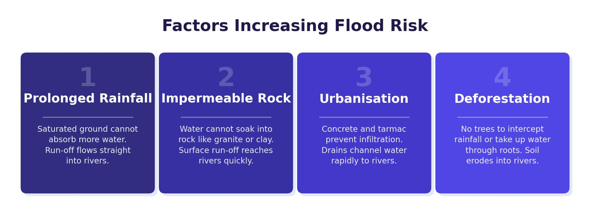

Why Do Rivers Flood?
Flooding occurs when a river receives more water than its channel can hold. The excess water spills over the banks and onto the surrounding land. Most flooding is caused by a combination of physical and human factors working together. To understand these causes, you first need to know how water moves through a drainage basin.
The Drainage Basin System
When precipitation falls, it enters the drainage basin as an input. The water can then be:
- Stored — on trees (interception), on the surface (lakes, reservoirs), in the soil (soil moisture), or underground (groundwater).
- Transferred — across the ground as surface runoff, through the soil as throughflow, or through rock as groundwater flow.
Anything that speeds up the transfer of water into the river channel — or reduces the amount of water stored — increases the risk of flooding.
Physical Causes of Flooding
There are three key physical factors that affect flood risk. They often work together, and a combination of two or three makes flooding much more likely.
Persistent rainfall (long periods of steady rain, common in winter depressions) saturates the soil. Once the soil is full of water, it cannot absorb any more, so additional rain flows across the surface as runoff directly into the river. Sudden heavy bursts of rain (common in summer) can also cause flooding because dry, baked soil is hard for water to infiltrate. Snowmelt is a third cause — when accumulated snow melts rapidly, large volumes of water are released as surface runoff, especially when the ground beneath is still frozen.
The rock type surrounding a river affects how quickly water reaches the channel. Impermeable rock (such as granite) does not allow water to soak through, so rainfall runs off the surface quickly into the river. Permeable rock (such as chalk and sandstone) allows water to percolate through and be stored as groundwater, slowing its journey to the river. Areas with impermeable rock therefore have a higher flood risk.
Steep slopes cause water to flow quickly downhill as surface runoff, giving it little time to infiltrate the soil. This means water reaches the river channel rapidly. Low-lying areas have gentle slopes where water moves slowly and can build up as surface water, increasing flood risk. Valleys at the bottom of steep mountains are particularly vulnerable because they collect water from a large surrounding area.
On the River Tees, the upper course at Cow Green Reservoir receives over 2,000 mm of rainfall per year on slopes up to 893 m high. The rock here is impermeable, so water reaches the river quickly. Snow also accumulates in winter and melts rapidly. This combination of high rainfall, steep relief and impermeable rock makes the upper Tees particularly prone to flooding.

Human Causes of Flooding
Human activities can significantly increase flood risk by changing how water moves through the drainage basin.
- Urbanisation — building houses, roads and car parks replaces natural soil and vegetation with impermeable surfaces like concrete and tarmac. Rainfall cannot infiltrate and instead runs off directly into drains and rivers. As gardens and fields disappear under new development, this problem intensifies.
- Deforestation — removing trees reduces interception (water caught on leaves and trunks) and transpiration (water absorbed by roots and released through leaves). More water therefore reaches the river as surface runoff. Ploughed farmland without hedgerows also offers little resistance to water flow.
Storm Hydrographs
A storm hydrograph shows how a river responds to a period of rainfall. It plots two things: rainfall (shown as bars) and discharge (shown as a line). Discharge is the volume of water flowing through the river at a given point, measured in cumecs (cubic metres per second).
Key Features of a Hydrograph
- Peak rainfall — the time of the heaviest rainfall.
- Peak discharge — the point at which the river reaches its highest flow. This occurs after peak rainfall because water takes time to travel from the land to the river channel.
- Lag time — the gap in time between peak rainfall and peak discharge. A short lag time means water reaches the river quickly, increasing flood risk. A long lag time means water takes longer to arrive, reducing flood risk.
- Rising limb — the section of the graph where discharge is increasing as water enters the river.
- Falling limb — the section where discharge decreases as water drains through the system.
A flashy hydrograph (steep rising limb, short lag time, high peak discharge) indicates a river that floods quickly. This is common in urban areas (impermeable surfaces), areas with steep slopes, impermeable rock, or deforested catchments. A flat hydrograph (gentle rising limb, long lag time, lower peak discharge) is typical of rural, vegetated areas with permeable rock.
What Affects Lag Time and Peak Discharge?
The same amount of rainfall can produce very different hydrographs depending on the characteristics of the drainage basin:
- Impermeable rock or concrete → less infiltration → more surface runoff → shorter lag time, higher peak discharge.
- Steep slopes → water moves faster downhill → shorter lag time.
- Deforestation/lack of vegetation → less interception → more water reaches the river → higher peak discharge.
- Dense vegetation/forest → more interception and infiltration → longer lag time, lower peak discharge.
- Saturated soil → cannot absorb more water → increased surface runoff → shorter lag time.